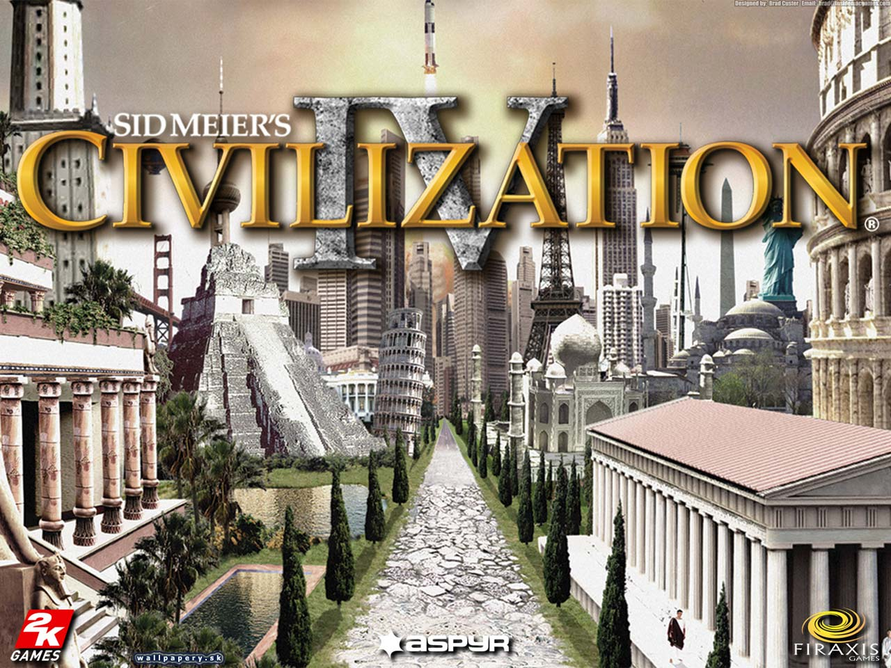
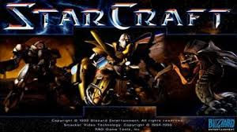
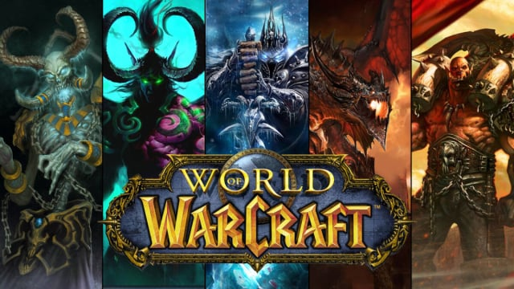
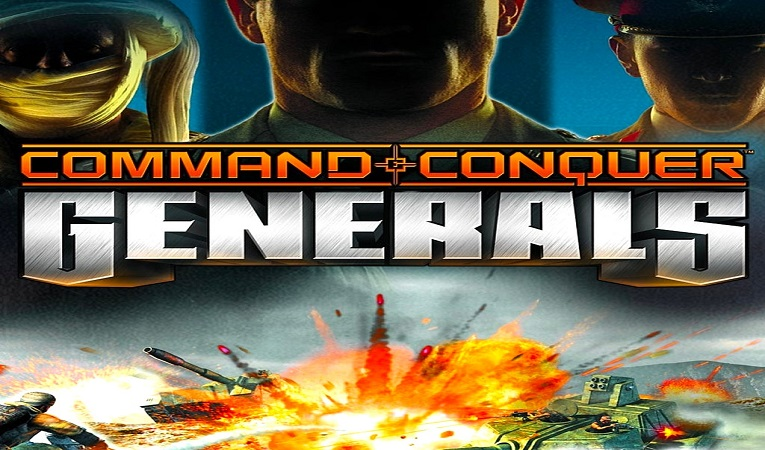
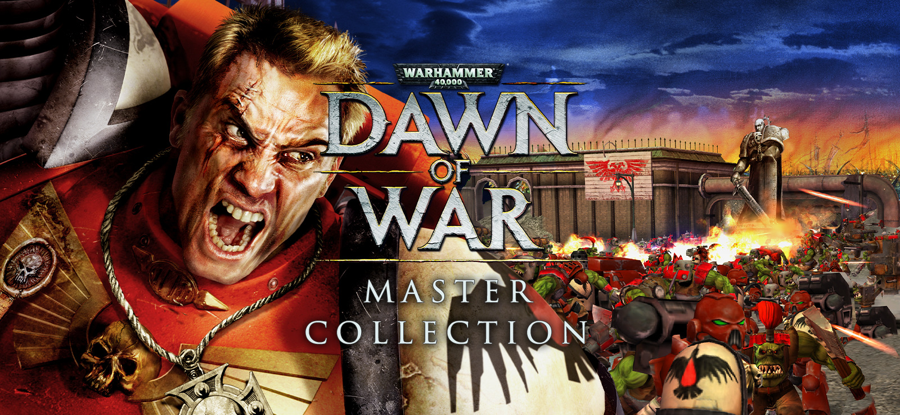
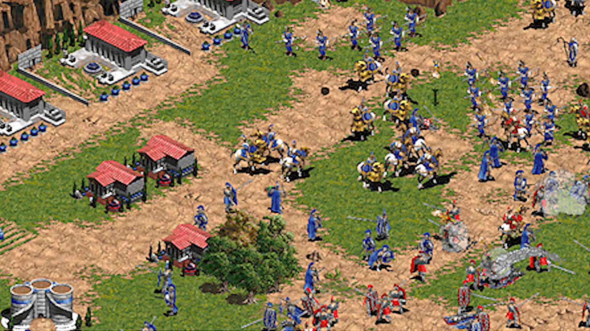
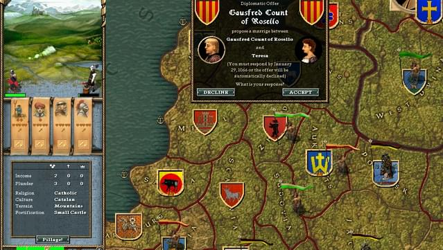
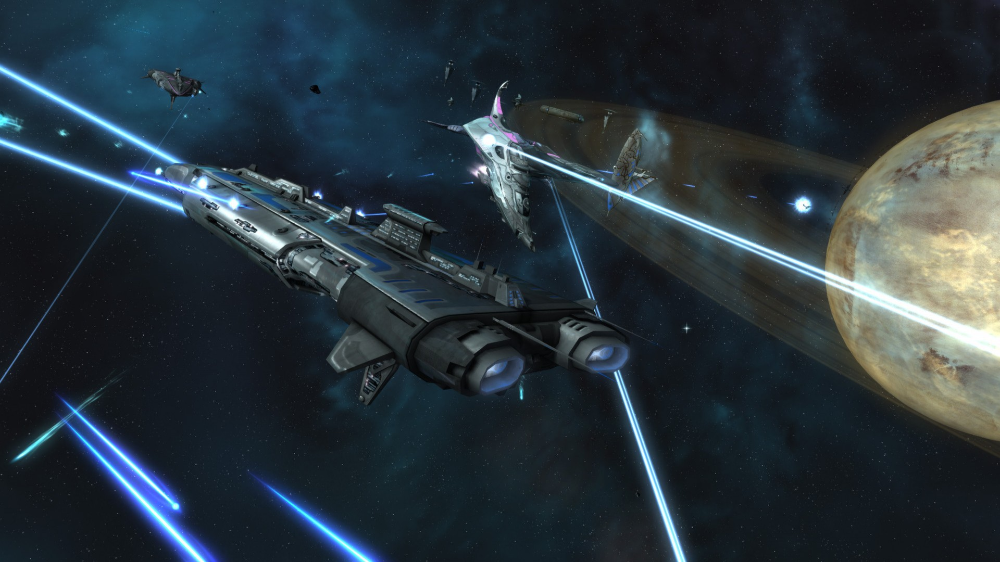
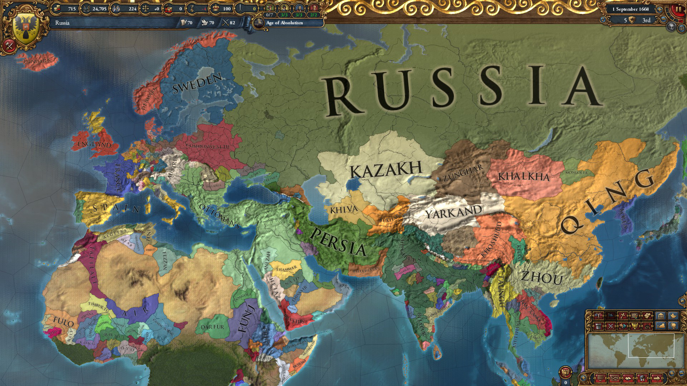

Tin Tức Về Thể Loại Game Chiến Thuật Năm 2024
Civilization series

Ngày phát hành: 09/1991
Tựa game chiến thuật này cho phép bạn trở thành một vị lãnh đạo cả một nền văn minh, một đế chế hùng mạnh chiến đấu với rất nhiều kẻ thù đáng sợ. Trở về thời Trung Cổ xa xưa, bạn sẽ được tham gia và tất cả 6 phần của game và có những trải nghiệm cho riêng mình.
Starcraft series

Ngày phát hành: 30/06/2024
Starcraft luôn là một trong những cái tên góp mặt ở hầu hết các bảng xếp hạng tựa game chiến thuật hay nhất mọi thời đại. Nổi tiếng đã lâu trong cộng đồng game thủ và tạo được ấn tượng tốt, Starcraft vẫn luôn có chỗ đứng vững chắc dù trên thị trường đã xuất hiện nhiều game chiến thuật hay và thú vị mới. Starcraft mang đến trải nghiệm khác biệt và mới lạ với rất nhiều lối chơi độc đáo, đặc biệt là những chiến thuật đa dạng.
Warcraft series

Ngày phát hành: 29/05/2024
Nếu không thích phong cách ngoài hành tinh của Starcraft thì bạn có thể lựa chọn Warcraft với phong cách thần thoại cổ xưa Warcraft, một tựa game siêu đỉnh với lối chơi xây dựng, quản lý quân đội quen thuộc sở hữu nhiều cải tiến độc đáo. Giống như Starcraft, người chơi sẽ vào vai một vị tướng với nhiệm vụ nắm giữ, quản lý tài nguyên và xây dựng quân đội để tiêu diệt kẻ thù. Warcraft tạo nên sự khác biệt bằng cách đưa yếu tố nhập vai vào lối chơi thông qua các tướng.
Command and Conquer series

Ngày phát hành: 23/03/2024
Một trong những dòng game chiến thuật nổi tiếng nhất, lấy bối cảnh tương lai cùng những vũ khí khoa học viễn tưởng mang đến trải nghiệm hoành tráng trong những trận giao tranh nảy lử Lối chơi của Command and Conquer thường đòi hỏi người chơi phải xây dựng căn cứ và thu thập tài nguyên, đầu tư cho việc sản xuất liên tục các đơn vị quân lính để tấn công và chinh phục căn cứ đối thủ.
Total War series
Ngày phát hành: 25/09/2024
Total War là series trò chơi thuộc thể loại chiến lược được phát triển bởi The Creative Assembly. Tựa game bao gồm cả chiến thuật theo lượt và quản lý tài nguyên kết hợp với các trận chiến dưới dạng chiến thuật thời gian thực, mang đến nhiều trải nghiệm thú vị.
Warhammer 40,000 Dawn of War series

Ngày diễn ra: 22/06/2024
Warhammer 40,000 Dawn of War trở về với thiết kế cơ bản của dòng game chiến lược thời gian thực. Tựa game vượt qua mọi khuôn khổ của thể loại theo lượt và đặt người chơi vào cuộc chiến thời gian thực. Trò chơi vẫn sử dụng một số thiết kế cổ điển như thu gom tài nguyên, xây dựng các tòa tháp chức năng, điều phối thật khéo léo các đơn vị binh lính được tập hợp thành một nhóm để vượt qua những màn chơi và thực hiện nhiệm vụ được giao.
Age of Empire series

Ngày phát hành: 25/09/2024
Age of Empire, còn được biết đến ở Việt Nam với tên gọi "Đế chế", là một dòng trò chơi điện tử chiến thuật thời gian thực mang tính chất lịch sử, ban đầu do Ensemble Studios phát triển và Xbox Game Studios phát hành. Phần đầu tiên ra mắt vào năm 1997.
Crusader Kings

Ngày diễn ra: 02/10/2024
Crusader Kings là trò chơi máy tính thuộc thể loại đại chiến lược thời gian thực lấy bối cảnh thời kỳ Trung Cổ do hãng Paradox Interactive đồng phát triển và phát hành lần đầu tiên vào năm 2004. Người chơi đảm nhận vai trò lãnh đạo một đế chế tồn tại trong khoảng thời gian từ năm 1066 đến 1453 SCN.
Sins of a Solar Empire

Ngày phát hành: 25/11/2024
Sins of a Solar Empire là trò chơi chiến lược thời gian thực không giới hạn trong không gian. Trong đó, người chơi điều khiển một trong ba chủng tộc khác nhau: TEC công nghiệp, Advent ngoại cảm và người ngoài hành tinh Vasari. Một mạng 3D được tạo ra gồm các hành tinh và các thiên thể khác trong mặt phẳng quỹ đạo của một hoặc nhiều ngôi sao. Người chơi có thể chinh phục các hành tinh lân cận và khám phá các hệ thống sao xa xôi. Đáng chú ý, tựa game không có chế độ Campain, nhưng có thể được chơi với các đối thủ AI ngoại tuyến và những người chơi trực tuyến khác. Một điểm khá thú vị phải không nào?
Europa Univliersas

Ngày diễn ra: 29/12/2024
Europa Universalis là trò chơi thuộc thể loại chiến lược do Paradox Development Studio phát triển và Strategy First phát hành ở Bắc Mỹ vào năm 2000. Dựa trên một trò board game cùng tên của Pháp của Philippe Thibault, Europa Universalis cho phép người chơi kiểm soát của một trong bảy quốc gia châu Âu (số khác có thể chơi được trong các màn kịch bản khác nhau).